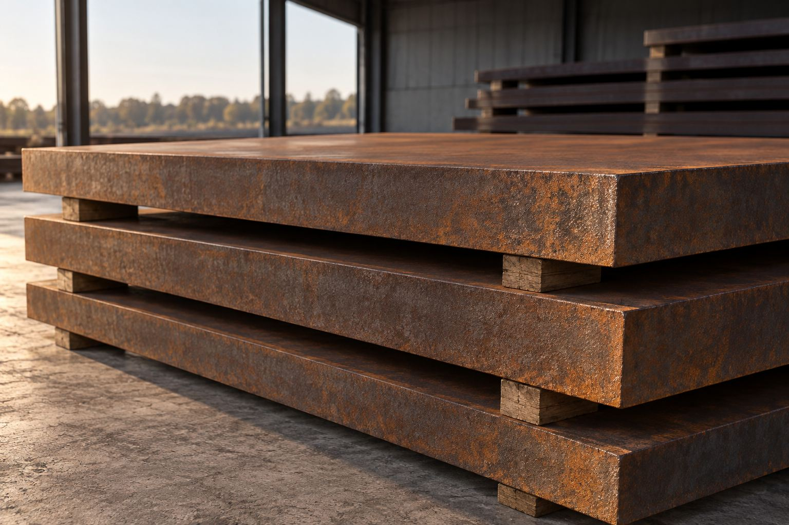
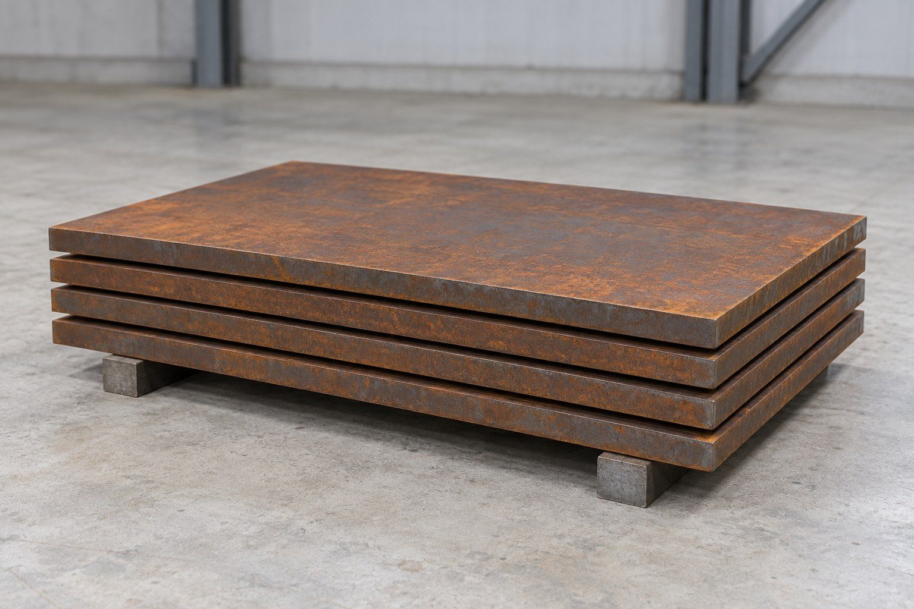
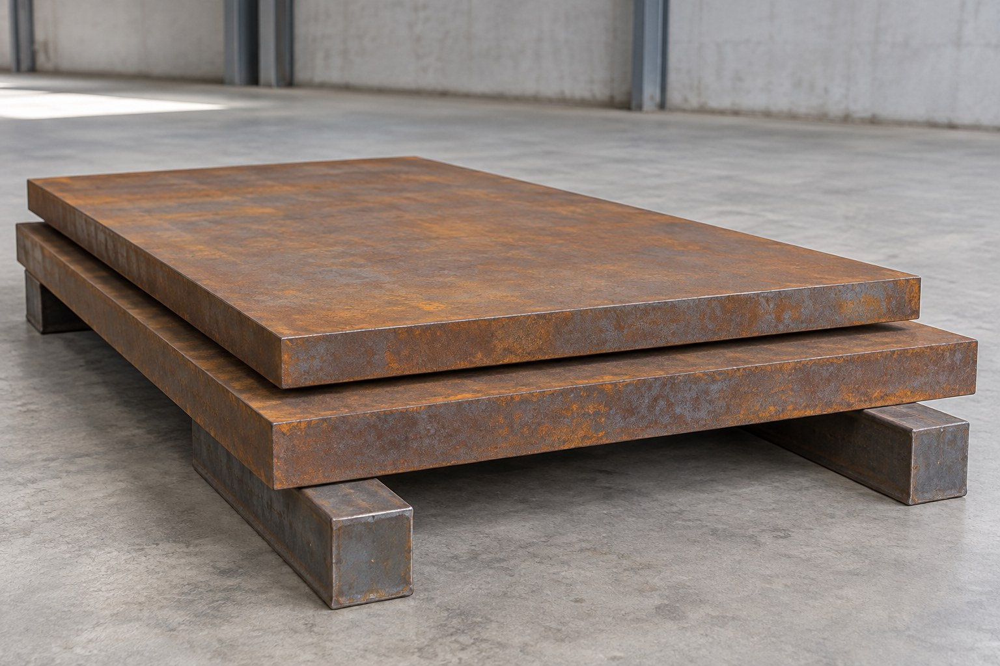
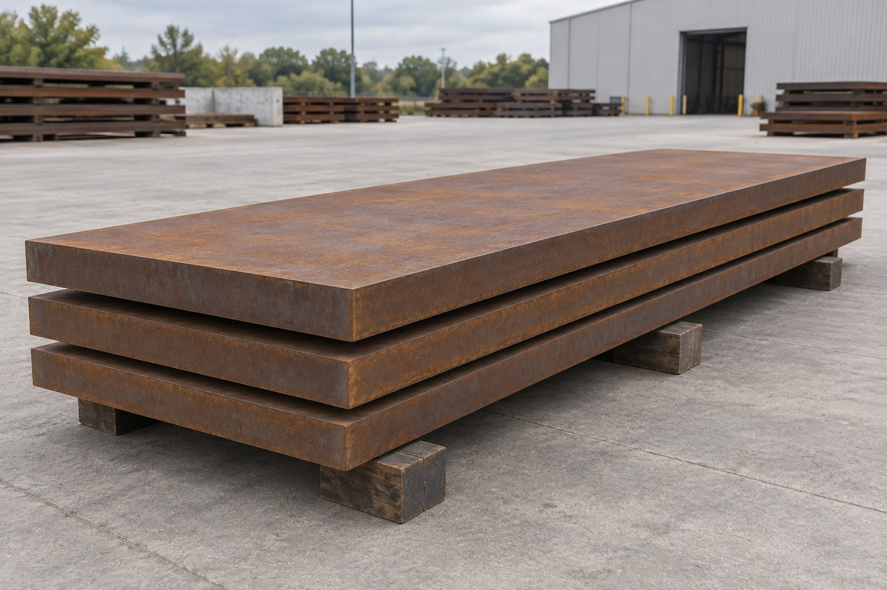

Architectural sheet
Architectural sheetCORTEN A
Corten A Steel Plate Supplier
Request Corten A steel plate and sheet from SHANDONG DAZHI. Review material parameters, facade and landscape uses, processing details and quotation requirements.
Explore material ↗
Explore weathering steel by product type. Define the material, then add your dimensions, finish and project requirements.
Architectural sheetRequest Corten A steel plate and sheet from SHANDONG DAZHI. Review material parameters, facade and landscape uses, processing details and quotation requirements.
Explore material ↗
Structural plateSource Corten B steel plate with a clear specification. Review reference properties, structural applications, fabrication requirements and RFQ details with SHANDONG DAZHI.
Explore material ↗Structural plateWeathering structural plate for projects that specify the S355J2W designation and its associated requirements.
Explore material ↗ Structural plate
Structural plateA high-strength, low-alloy structural plate inquiry option with atmospheric corrosion resistance.
Explore material ↗Structural plateAn ASTM structural steel specification for inquiries requiring improved atmospheric corrosion resistance.
Explore material ↗Structural plateWeathering steel plate for drawings and material lists that call for S355J0W.
Explore material ↗Structural plateA weathering structural steel designation for procurement to the specified Chinese material standard.
Explore material ↗ Architectural sheet
Architectural sheetAn EN weathering-steel designation for sheet and plate inquiries with a defined WP requirement.
Explore material ↗Architectural sheetA WP weathering-steel grade for projects requiring the complete S355J2WP specification.
Explore material ↗Architectural sheetWeathering sheet and strip for projects that identify ASTM A606 Type 4.
Explore material ↗ Processed material
Processed materialA surface-finish inquiry for projects that want to review an initial weathered appearance before installation.
Explore material ↗Processed materialDrawing-based inquiries for weathering steel screens, patterned panels and architectural cut profiles.
Explore material ↗
Structural platePlate inquiries for projects specifying S235J2W to EN 10025-5. Confirm the complete designation, dimensions, condition and inspection requirements.
Explore material ↗
Structural plateAn inquiry option for drawings that call for S355K2W. Define the standard edition, plate thickness, delivery condition and required material records.
Explore material ↗
Structural plateBridge plate inquiries specifying ASTM A709 Grade 50W. Confirm the project specification, dimensions, toughness requirements and inspection scope.
Explore material ↗Try another grade, product type or standard reference.
Images illustrate industrial processes and material applications. They do not certify the pictured steel grade or identify DAZHI inventory. Dimensions, processing and supply scope are confirmed per inquiry.
High-strength atmospheric corrosion-resistant structural plate for exposed fabrication.
Explore material ↗Weathering structural plate for procurement to the specified Chinese standard.
Explore material ↗Send the grade, size and quantity. Let’s define the next step.